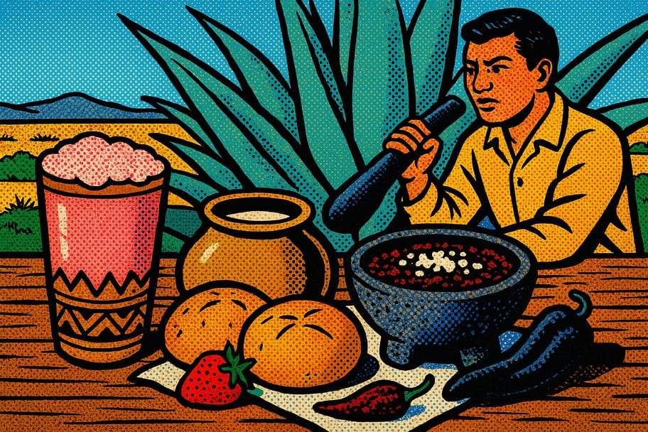

Recetario del maguey y el pulque

El pulque no solo se bebe: enriquece la cocina. Su fermento aporta sabor y esponjosidad al pan, suaviza las salsas y se transforma en curados de fruta. Estas recetas celebran al maguey en la mesa. Usa pulque fresco y de confianza; el curado y la salsa borracha contienen alcohol.
🍓 1. Curado de pulque de fruta
- ☐ 1 litro de pulque fresco
- ☐ 2 tazas de fruta (fresa, guayaba o mango)
- ☐ Azúcar o piloncillo al gusto
- 1Hacer el puré
Licua la fruta con un poco de azúcar hasta obtener un puré dulce. Cuela si quieres una textura más fina.
- 2Integrar con el pulque
Mezcla el puré con el pulque suavemente, sin batir de más para no cortar su textura. Ajusta el dulzor.
- 3Servir bien frío
Enfría y sirve el mismo día. El curado es delicado y se disfruta fresco, recién hecho.
🌶️ 2. Salsa borracha de pulque
- ☐ 6 chiles pasilla
- ☐ 1 taza de pulque
- ☐ 1 diente de ajo y un trozo de cebolla
- ☐ Sal y queso añejo para servir
- 1Asar los chiles
Tuesta los chiles pasilla en el comal con cuidado, ábrelos y quita semillas. Remójalos en agua caliente 10 min.
- 2Moler
Licua o muele los chiles con el ajo, la cebolla y un poco de sal hasta formar una salsa espesa.
- 3Agregar el pulque
Incorpora el pulque poco a poco hasta lograr una salsa fluida. Sirve con queso añejo desmoronado encima. Ideal para barbacoa.
🍞 3. Pan de pulque
- ☐ 500 g de harina
- ☐ 200 ml de pulque natural
- ☐ 2 huevos, 100 g de azúcar, 80 g de mantequilla
- ☐ 1 cucharadita de levadura y una pizca de sal
- 1Mezclar
Disuelve la levadura en el pulque tibio. Mezcla con la harina, el azúcar, los huevos y la sal hasta formar masa.
- 2Amasar y levar
Agrega la mantequilla y amasa hasta que quede suave. Deja reposar tapada hasta que duplique su tamaño (1.5–2 h).
- 3Hornear
Forma los panes, deja levar 40 min más, barniza con huevo y hornea a 180 °C unos 25 min hasta dorar.
💡 Consejos del maguey
- El pulque para cocinar debe estar fresco; si huele muy avinagrado, mejor úsalo solo para masa de pan.
- El pulque sustituye al agua o la leche en muchas masas y les da una miga más esponjosa.
- Los curados se preparan al momento: no se guardan bien de un día para otro.
¿Te sirvió este recetario?
Compártelo en tu comunidad y explora más recursos en Guardianes del Pulque.
← Más recetarios 💚 Donar